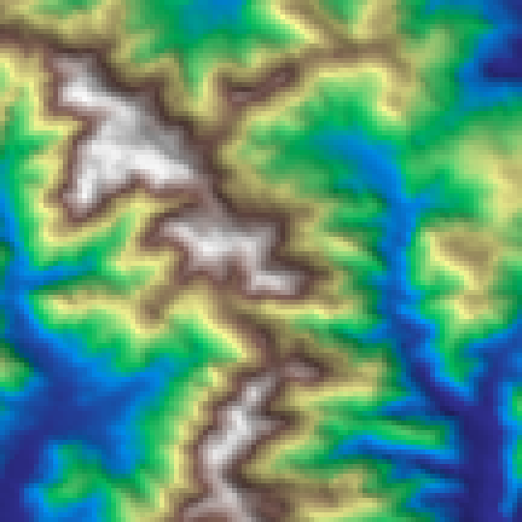
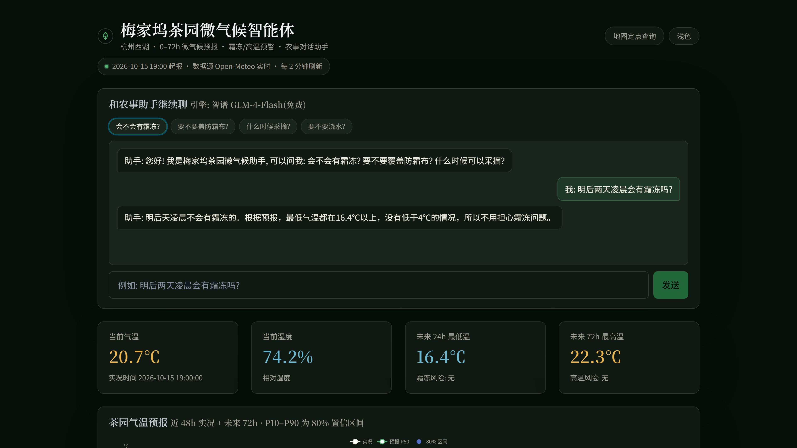
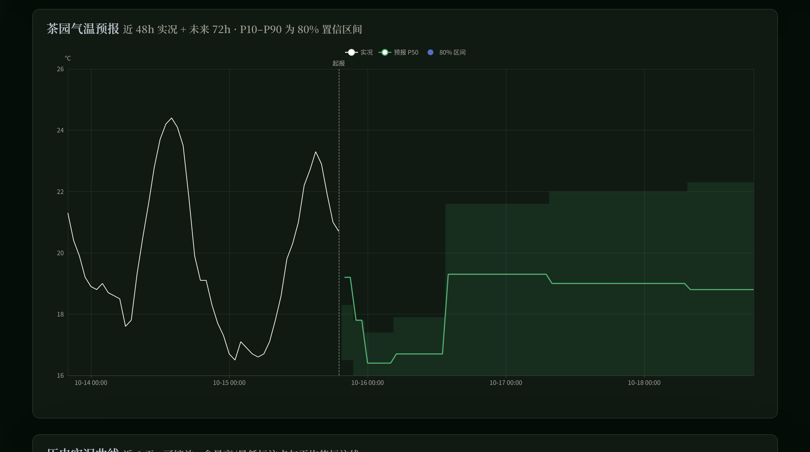
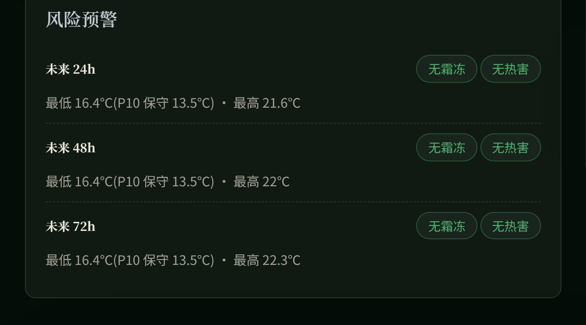
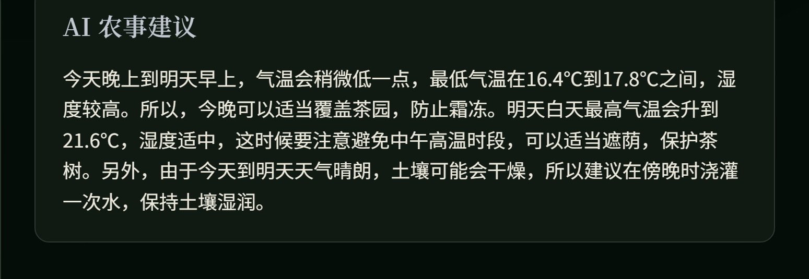
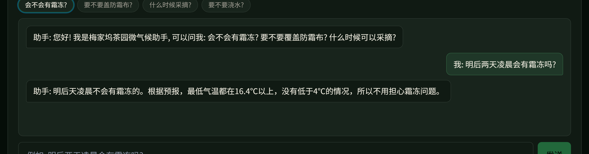
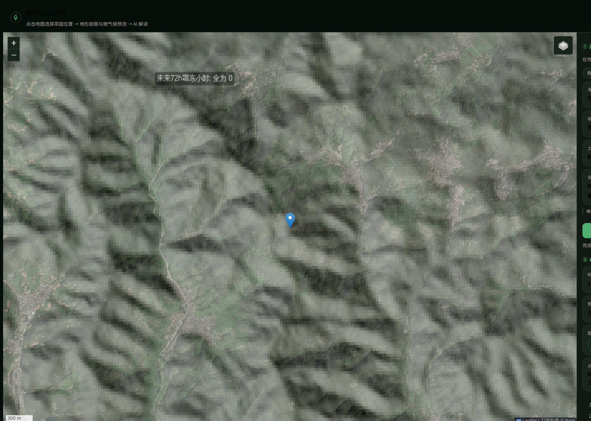
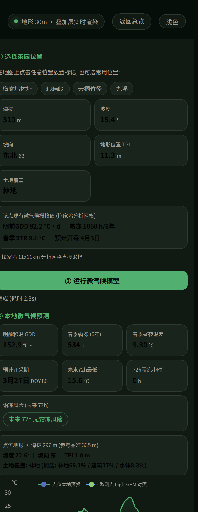
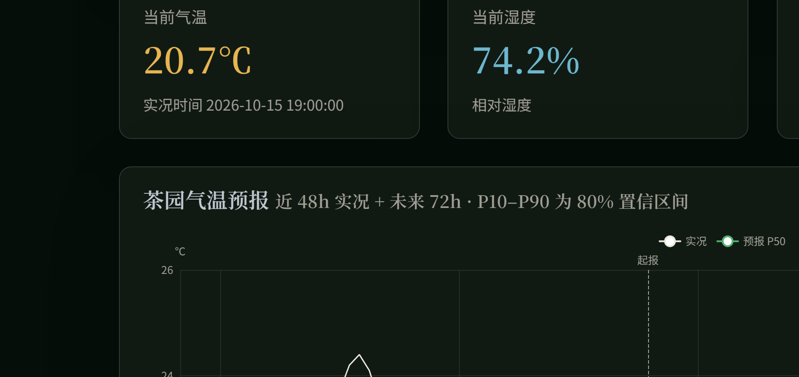

梅家坞茶园微气候智能体
杭州西湖 · 0–72h 微气候预报 · 冻害与高温预警




实况 · 预报 P50 · P10–P90
霜冻 / 高温风险按等级给结论

农事对话 · 智谱 GLM-4-Flash回答读的是同一份预报与风险结论


30m 地形 · 现场计算海拔 297 m · 坡度 22.6° · 坡向 东 · 林地
同一座山,两处茶园开采期差 7 天 · 春季霜冻差 526 小时(6 年)

传感器实测 + 天气站互补上传 CSV 即用实测值锚定预测
微信小程序同一套数据 · 同一套界面
梅家坞茶园微气候智能体
ERA5-Land 再分析 · 全国茶园地图 2022 · Open-Meteo 实时
LightGBM 分位数回归 · 30m 微地形降尺度 · AI4Climate